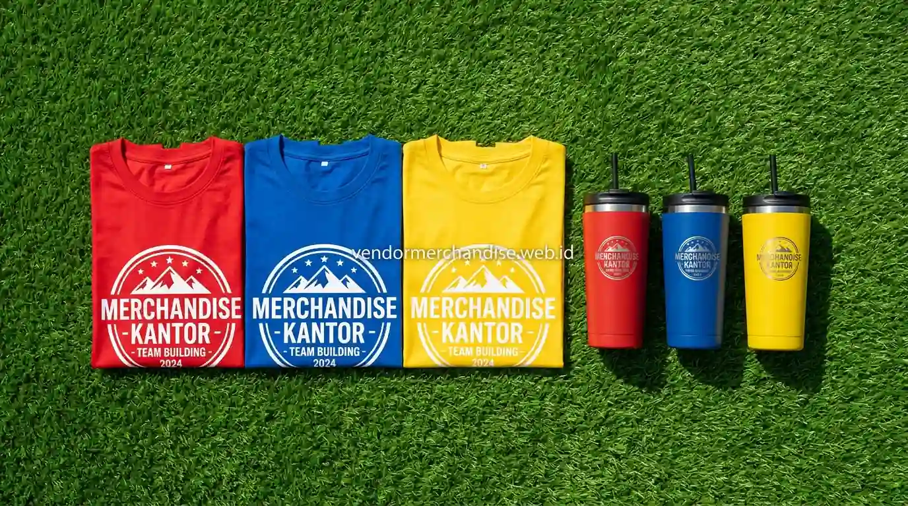

Apa Tujuan Team Building bagi Perusahaan?
Tujuan utama team building bagi perusahaan adalah membangun kekompakan antar anggota tim sehingga kolaborasi kerja menjadi lebih lancar, komunikasi antar divisi lebih terbuka, dan konflik internal yang muncul akibat perbedaan cara kerja dapat lebih mudah diselesaikan bersama.
Selain itu, team building juga sering dijadikan momen untuk mengenalkan karyawan baru kepada tim yang sudah ada, sehingga proses adaptasi di lingkungan kerja dapat berlangsung lebih cepat dan alami dibanding hanya melalui orientasi kerja formal.
Apa Saja Bentuk Aktivitas dalam Team Building?
Aktivitas team building dapat disesuaikan dengan tujuan spesifik perusahaan, mulai dari penguatan komunikasi, pemecahan masalah bersama, hingga sekadar mempererat kedekatan personal antar anggota tim di luar suasana kerja formal.
Beberapa bentuk aktivitas yang umum digunakan dalam acara team building:
- Games kelompok yang menuntut kerja sama dan strategi bersama
- Outbound atau aktivitas outdoor seperti flying fox dan permainan fisik ringan
- Simulasi studi kasus atau problem solving lintas divisi
- Sesi diskusi reflektif tentang dinamika kerja tim
- Kompetisi kelompok kecil dengan sistem poin dan hadiah

Apa Saja Manfaat Team Building bagi Kinerja Tim?
Manfaat team building bagi kinerja tim dapat dirasakan baik dalam jangka pendek selama acara berlangsung maupun jangka panjang pada kualitas kolaborasi sehari-hari di tempat kerja, sehingga aktivitas ini sering dianggap sebagai investasi terhadap produktivitas tim.
Beberapa manfaat yang umum diperoleh dari acara team building:
- Meningkatkan rasa saling percaya antar anggota tim
- Memperbaiki pola komunikasi, terutama pada tim lintas divisi
- Membantu mengidentifikasi peran dan kekuatan masing-masing anggota tim
- Menurunkan tingkat stres kerja melalui suasana yang lebih santai
- Memperkuat rasa memiliki karyawan terhadap perusahaan
Mengapa Merchandise Penting dalam Acara Team Building?
Merchandise dalam acara team building berperan memperkuat identitas kelompok selama aktivitas berlangsung, sekaligus menjadi penanda visual yang membedakan satu tim dengan tim lain apabila acara dilakukan dalam format kompetisi antar kelompok.
Selain fungsi identitas, merchandise team building juga sering dijadikan kenang-kenangan yang mengingatkan karyawan pada pengalaman kerja sama yang telah dilalui bersama, sehingga nilai kebersamaan dari acara tersebut dapat terus terbawa ke lingkungan kerja sehari-hari.
Rekomendasi Merchandise untuk Acara Team Building
Pemilihan merchandise untuk team building sebaiknya mempertimbangkan kenyamanan penggunaan selama aktivitas fisik maupun indoor, serta kemampuan produk untuk menonjolkan identitas tim. Berikut beberapa pilihan produk dari Merchandise Kantor yang relevan untuk kebutuhan ini:
1. Kaos Team Building Custom Logo
Kaos seragam dengan warna berbeda per kelompok menjadi pilihan merchandise yang paling umum untuk team building, karena memudahkan identifikasi antar tim sekaligus menciptakan kesan kekompakan selama aktivitas berlangsung.
2. Tumbler dan Botol Minum Custom Logo
Tumbler custom logo cocok dibagikan sebagai merchandise team building karena dibutuhkan selama aktivitas outdoor maupun indoor, sekaligus tetap bermanfaat digunakan karyawan setelah acara selesai.
3. Topi dan Bandana Custom Logo
Topi atau bandana custom logo menjadi pelengkap merchandise team building yang fungsional untuk aktivitas outdoor, sekaligus dapat dijadikan atribut pembeda antar kelompok dalam permainan berbasis tim.
4. Tas Ransel atau Waist Bag Ringan
Tas ransel atau waist bag custom logo membantu peserta membawa perlengkapan pribadi selama mengikuti rangkaian aktivitas outdoor, sehingga lebih praktis dibanding membawa tas kerja biasa.
Seluruh produk di atas dapat dipesan dalam sistem custom logo dan warna sesuai identitas perusahaan, dengan pilihan kuantitas yang menyesuaikan jumlah peserta dan jumlah kelompok dalam acara team building.
"Atribut dan merchandise seragam dalam team building membakar semangat kebersamaan dan meruntuhkan sekat antar divisi secara alami."
— Erlang Sinatrya, Penulis Merchandise Kantor

Siapkan Merchandise Team Building Bersama Merchandise Kantor
Merchandise Kantor siap membantu tim HR dan manajer perusahaan menyiapkan merchandise custom logo yang tepat untuk acara team building, mulai dari kaos, tumbler, hingga tas ransel yang mendukung kelancaran aktivitas tim. Hubungi tim Merchandise Kantor sekarang untuk konsultasi produk dan estimasi harga sesuai jumlah peserta team building perusahaan Anda.